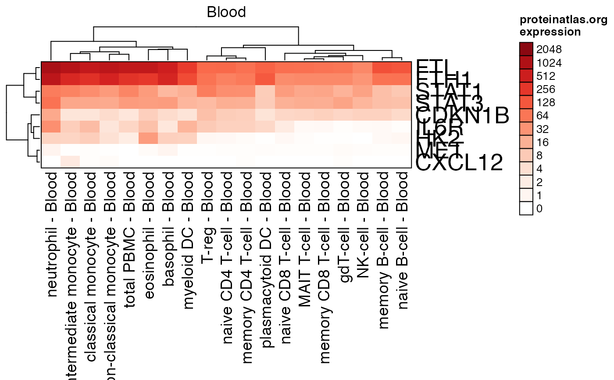

proteinatlas.org expression heatmap
proteinatlas_heatmap( expr = proteinatlas_expr_fdb11, genes = NULL, samples = NULL, type = c("all", "Tissue", "Cell", "Blood", "Brain"), row_cex = 1, column_cex = 1, ramp = "Reds", lens = 0, color_ceiling = NULL, cluster_columns = FALSE, cluster_rows = FALSE, column_split = NULL, row_split = NULL, centered = FALSE, row_filter = 0, column_filter = 0, controlSamples = NULL, gene_names = FALSE, gene_im = NULL, gene_im_colors = NULL, left_annotation = NULL, fill_missing = TRUE, border = TRUE, useCenterGroups = TRUE, trim_columns = FALSE, rowStatsFunc = matrixStats::rowMins, return_type = c("heatmap", "list"), verbose = FALSE, ... )
Arguments
| expr |
|
|---|---|
| genes |
|
| type |
|
| row_cex, column_cex |
|
| ramp |
|
| lens |
|
| color_ceiling |
|
| cluster_columns, cluster_rows |
|
| centered |
|
| column_filter, row_filter | numeric value which hides columns or rows when the column or row maximum expression is not at or above this numeric threshold. The value filtered is the expression value indicated on the heatmap, the normal expression value, not log2-transformed. |
| controlSamples |
|
| gene_names |
|
| gene_im |
|
| gene_im_colors |
|
| left_annotation | optional heatmap annotation as produced
by |
| fill_missing |
|
| border |
|
| useCenterGroups |
|
| trim_columns |
|
| rowStatsFunc |
|
| return_type |
|
| verbose |
|
| ... | additional arguments are passed to |
Value
Heatmap produced by ComplexHeatmap::Heatmap() by default,
when return_type="heatmap"; when return_type="list" it
returns a list with components used in the heatmap, perhaps
most important is the actual expression data matrix after
expression centering, expression filtering, and sample
subsetting operations, as relevant. The list also includes
the Heatmap under element "hm", so it can be plotted
using ComplexHeatmap::draw().
Details
This function takes proteinatlas expression data expr,
and creates a heatmap of expression using a subset of
genes provided as genes.
By default, columns in expr are split by type, where
colnames(expr) are expected to have suffix " - Type"
at the end of each column name. If the columns cannot be
split accordingly, then all columns are assigned one
split name "Expression".
To customize data for individual samples, the expr data
should be filtered before calling this function.
By default, the row-centering method centers each row by
the row minimum expression using only "Tissue" samples,
so that expression will be displayed relative to the
lowest tissue expression. An optional set of control samples
can be provided with argument controlSamples.
Examples
test_genes <- c("DKK1","DKK4","CXCL12","IL6R","MET", "HK2","FTL","FTH1","STAT1","STAT3","CDKN1B"); proteinatlas_heatmap(genes=test_genes, type="Blood", centered=FALSE, cluster_rows=TRUE, cluster_columns=TRUE, row_filter=2)# use proteinatlas_genesets_fdb11 use_im <- c("secreted_proteins", "membrane_proteins", "NOT_membrane_secreted", "TFs"); proteinatlas_im <- list2im_opt(proteinatlas_genesets_fdb11[use_im]); test_genes <- c("DKK1","DKK4","CXCL12","IL6R","MET", "HK2","FTL","FTH1","STAT1","STAT3","CDKN1B"); proteinatlas_heatmap(genes=test_genes, type="Blood", centered=TRUE, gene_im=proteinatlas_im);